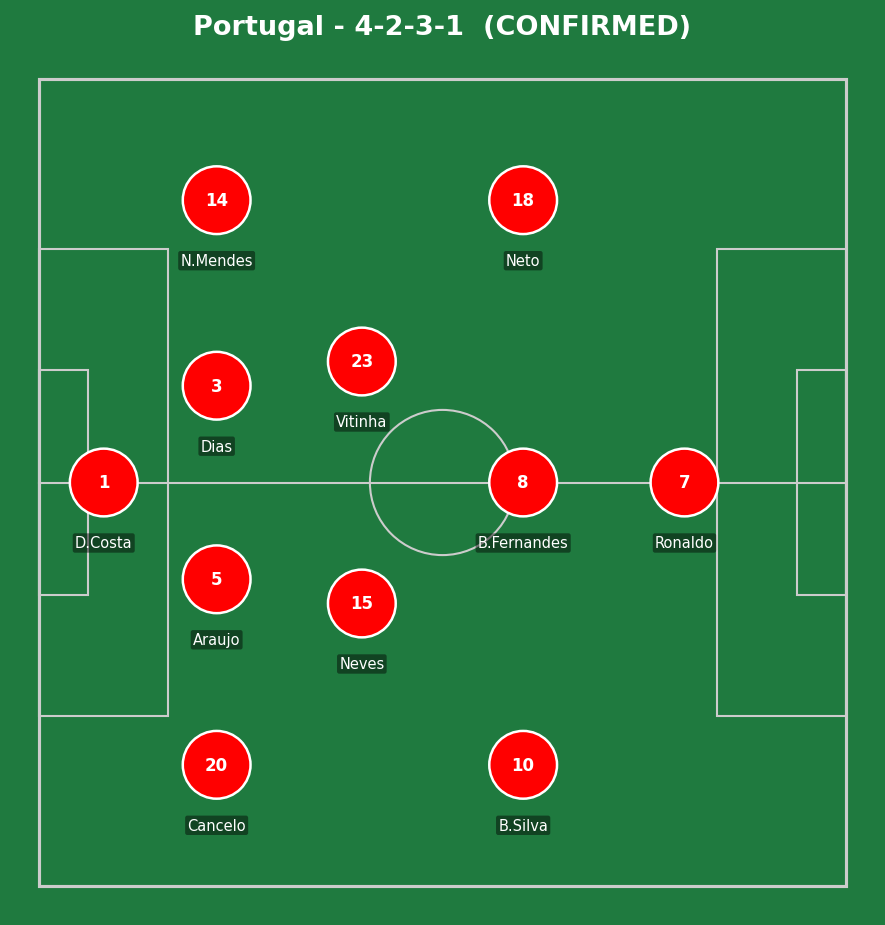
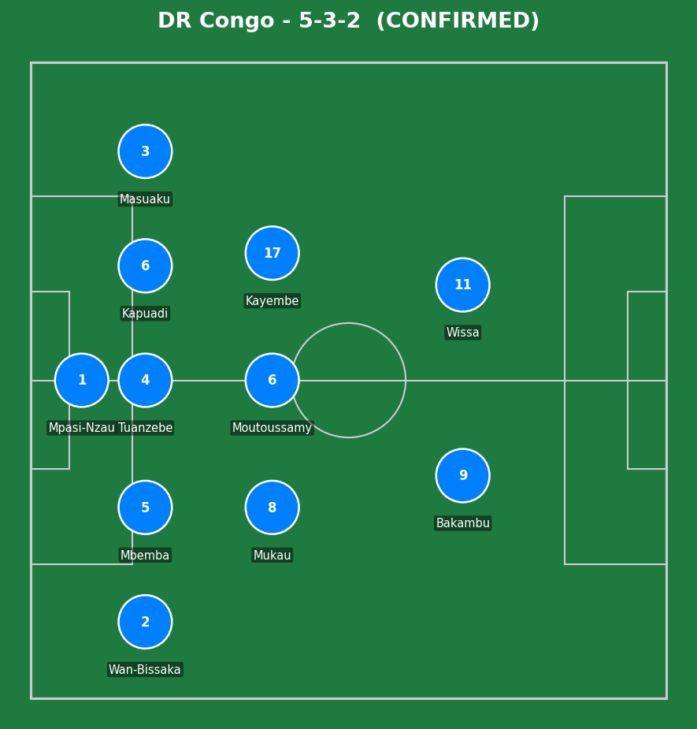
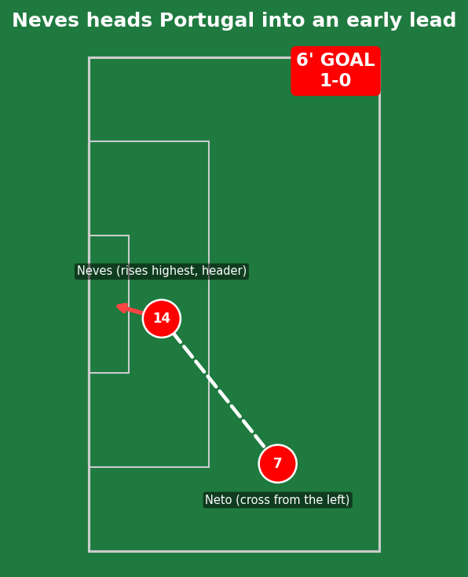
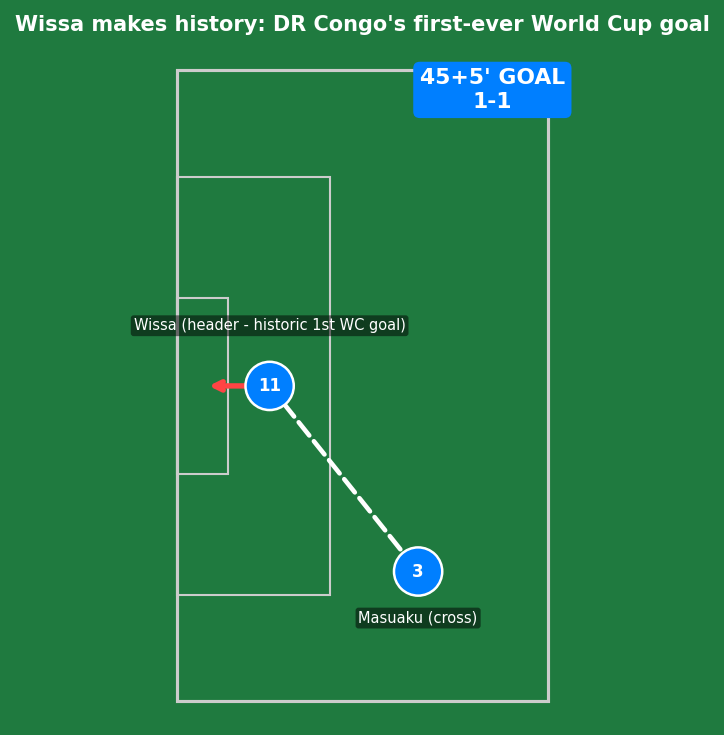
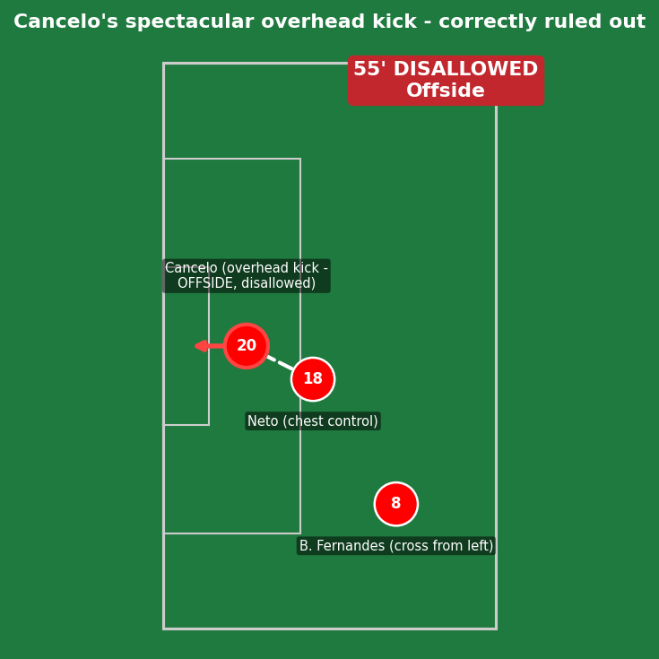
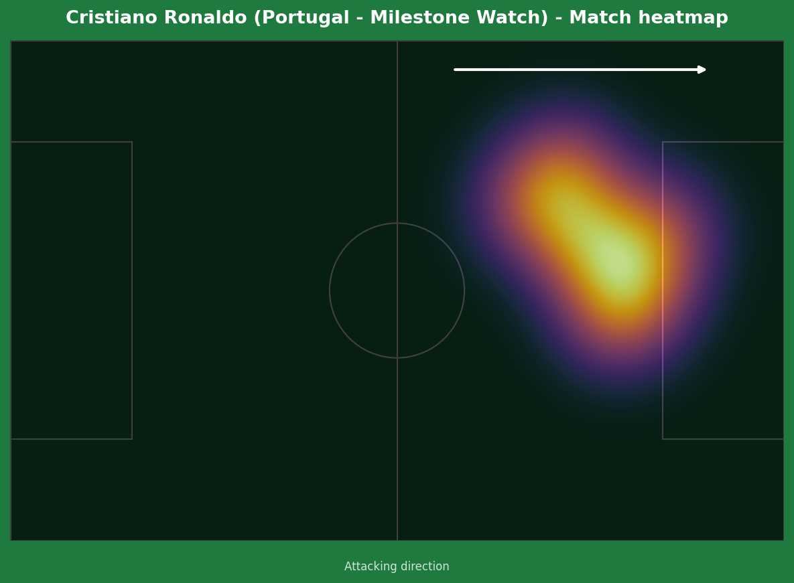
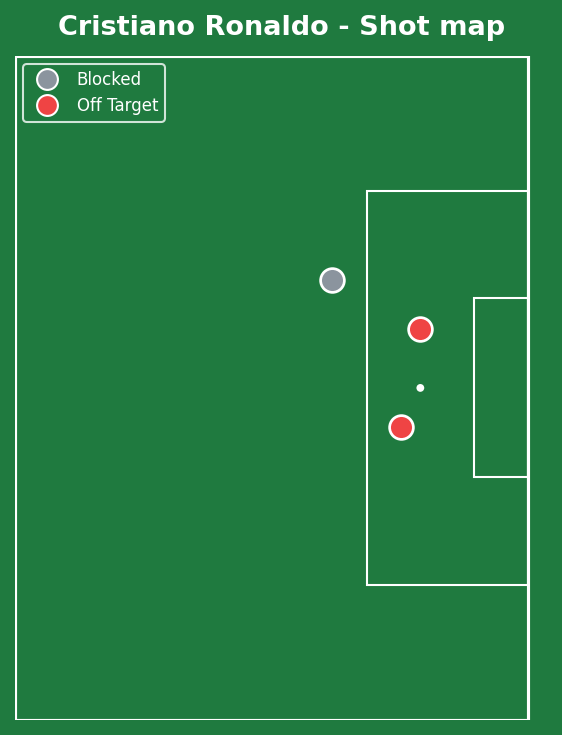
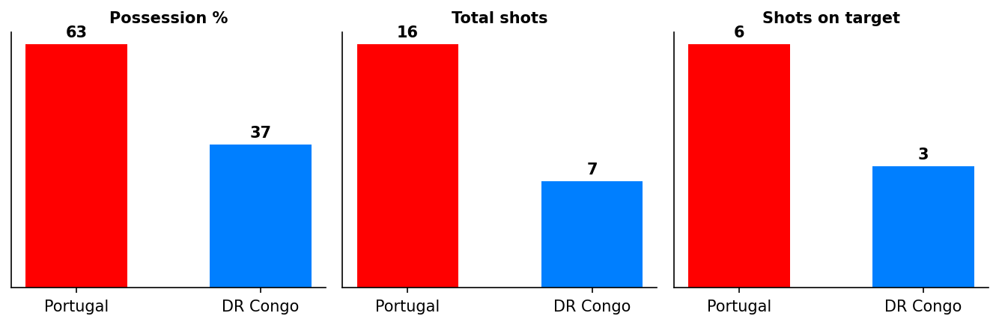
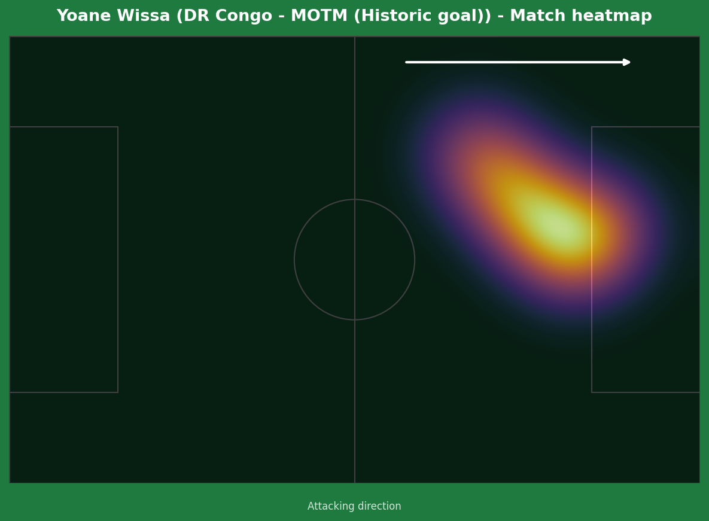
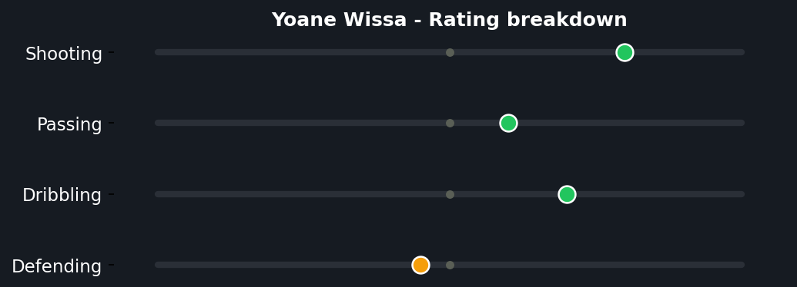

Joao Neves's early header looked set to give Portugal a routine opening win, but Yoane Wissa's stoppage-time equalizer - DR Congo's first-ever World Cup goal in their history - earned a thoroughly deserved point for the Leopards, back at the tournament for the first time since 1974. Portugal dominated possession and chances thereafter but couldn't find a winner, with Ronaldo and Bruno Fernandes both missing late opportunities.


Portugal (4-2-3-1): Diogo Costa; Cancelo, Araujo, Veiga, N. Mendes; Neves, Vitinha; B. Silva, B. Fernandes, Neto; Ronaldo. DR Congo (5-3-2): Mpasi-Nzau; Wan-Bissaka, Mbemba, Tuanzebe, Kapuadi, Masuaku; Mukau, Moutoussamy, Kayembe; Bakambu, Wissa.
Portugal's 63% possession and 16 shots reflect total control of the ball, but DR Congo's disciplined 5-3-2 - five at the back, compact and well-organized - made clean chances genuinely hard to come by for long stretches. The Cancelo disallowed "goal" (a spectacular overhead kick, correctly ruled offside) is the closest Portugal came to a real moment of magic before their actual breakthrough.
DR Congo's approach was patient and disciplined rather than purely defensive - Masuaku's delivery for the equalizer, and Bakambu's effort that struck the post earlier, both came from genuine attacking intent on the break, not just a side hoping to survive on damage limitation alone.
The key moment was DR Congo's stoppage-time equalizer itself - scored in the final seconds of the first half, it completely changed the emotional complexion of the match and gave the Leopards belief for the second 45, even as Portugal continued to dominate territorially.

A simple, well-executed set-piece-style move from open play - Pedro Neto's cross from the left was delivered with real quality, and Joao Neves, despite being one of the shorter players on the pitch, timed his jump perfectly to win the header. Clean technique and good delivery rather than any DR Congo defensive lapse.

This deserves to be remembered as more than a footnote. Arthur Masuaku's cross was precise, and Wissa's header beat Portugal's defense through good movement and timing - genuine quality, not a fortunate bounce. The context elevates it further: DR Congo's first-ever World Cup goal, 52 years after their only previous appearance as Zaire in 1974, where they were outscored 14-0 across three matches. This single header closes a five-decade gap in their footballing history.

A genuinely spectacular piece of technique that didn't count. Bruno Fernandes delivered a cross from the left, Pedro Neto cleverly cushioned it with his chest inside the box, and the loose ball fell to Joao Cancelo, who produced an overhead kick that flew into the net. The assistant referee's flag went up immediately - Cancelo was marginally offside when Neto's touch played him in. Replays confirmed the call was correct; a brilliant goal, correctly chalked off, with no referee error to flag here.


The milestone first, because it deserves real respect: at 41 years and 132 days, Ronaldo became the oldest outfield player to ever start a World Cup match, and his 23rd World Cup appearance ties him with Paolo Maldini for fourth all-time. Six World Cups is a club of two - him and Messi - and simply being on this pitch, in this form, at his age is a genuine credit to elite-level professionalism and longevity.
That said, the missed chances genuinely matter and deserve honest scrutiny, not a pass just because of who he is. Two clear half-chances went off-target in the 68th and 73rd minutes, both shown visibly shaking his head in frustration afterward, and he had a real opportunity to become the first player in history to score in six different World Cups - he didn't take it. A clever assist for Nuno Mendes earlier showed his footballing brain is still sharp, but the finishing edge that defined his career wasn't there when his team needed it most today. Both things are true at once: the longevity is remarkable, and the finishing letdown today is a fair, ordinary football criticism that shouldn't be softened just because of the name on the shirt.
Illustrative reconstruction based on known event locations, not raw GPS tracking data.

A 16-7 shot count in Portugal's favor reflects clear territorial dominance that simply didn't translate into a winning goal.


A single, historically significant moment is enough to earn this award over any individual Portugal performance today - Wissa's header didn't just earn a point, it gave an entire footballing nation their first-ever World Cup goal after five decades of waiting. Sometimes the magnitude of a moment outweighs the raw statistical volume of a performance, and this is exactly that case.
Illustrative reconstruction based on known event locations, not raw GPS tracking data.
Neves - 7.5 (goal, energetic display)
Ronaldo - 5.5 (missed chances, milestone)
B. Fernandes - 6.5 (creative, late miss)
Cancelo - 6.0 (disallowed wonder-goal)
Wissa - 8.0 ⭐ MOTM (historic goal)
Kapuadi - 6.5 (organized, header chance)
Masuaku - 7.0 (assist, energetic)
Mpasi-Nzau - 6.5 (kept it respectable)
Next: Portugal face Uzbekistan. DR Congo face Colombia, looking to build on this historic start.